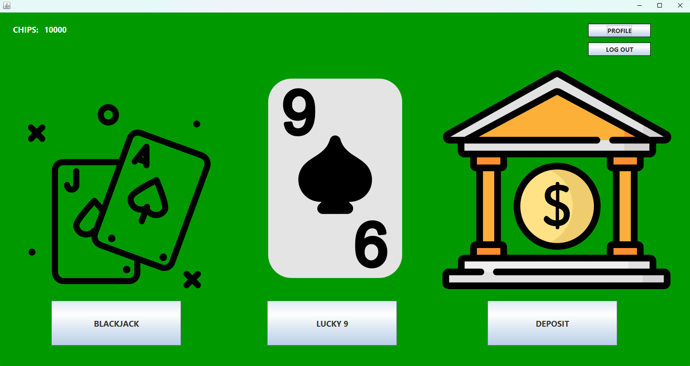

Student • IT Project Management • Digital Skills
Hi, I'm Kenneth, a student building my future in IT project management.
I’m learning how to plan, coordinate, and support technology projects by combining academic knowledge, teamwork, and practical problem-solving skills.
- 3Years
- 2Projects
- 100%Driven
Project List
-

Academic ProjectAllin Bets
A personal Gambling game consist of multiple betting options and a user-friendly interface.
-
 Collaborative Task
Collaborative TaskITRANSCO Transport & Accounting System
ITRANSCO is a Philippine jeepney company operating modernized public utility vehicles (PUVs). This project is an all-in-one web-based transport and accounting management system with RFID authentication and Excel export functionality.
About
I am a 3rd Year Student in Bachelor of Science in Information Technology student pursuing IT Project Management, where I am learning how to organize projects, manage priorities, and support successful technology outcomes through clear planning and teamwork.
My focus is on building a strong foundation in communication, problem-solving, risk awareness, and project coordination while developing practical skills for future opportunities.
Skills
- Project Planning
- Team Collaboration
- Research & Analysis
- Communication
- Problem Solving